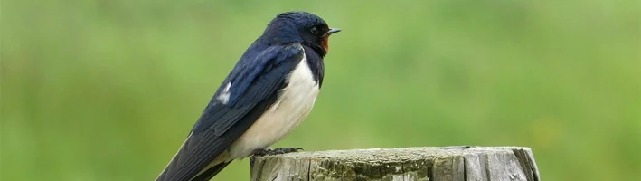

Tudo sobre a Fauna do Brasil!
Aqui você encontrará tudo sobre os principais pássaros da fauna brasileira
Andorinha
Sobre
Principais características físicas do pássaro andorinha
O pássaro andorinha costuma medir de 16 a 20 cm e pode pesar entre 15 e 25 g. A andorinha-grande (Progne chalybea), entretanto, pesa 43 g e o comprimento gira em torno de 20 cm. É a espécie de maior número encontrada em solo brasileiro.
As penas das andorinhas normalmente são da cor azul metálico, com a tonalidade quase preta. As asas são longas e pontiagudas, ao passo que a cauda geralmente é bifurcada. Além disso, o bico e as patas ainda são pequenos.
A andorinha fêmea possui poucas diferenças em relação aos machos. As características físicas são bem parecidas, porém a primeira citada tem penas mais curtas e o abdômen conta com uma sombra um pouco mais pálida.
Onde a ave vive?
O habitat do pássaro andorinha é amplo. As espécies são adaptáveis e vivem perto dos seres humanos. As aves apenas não gostam de ambientes frios e abandonam esses locais com o intuito de sobrevivência.
Nesse contexto, as andorinhas têm preferência por campos abertos e lugares próximos a rios ou lagos. O animal não gosta de cidades muito urbanizadas, mas se acostuma sem dificuldades.
Ademais, a solidão não é para o pássaro andorinha, que realiza a migração somente em grupos. Essa também é uma forma de proteção contra os predadores. Ainda, vale destacar que o bichinho comumente pode ser encontrado na Europa, na África, no Oriente Médio e na América do Sul.
O que o pássaro andorinha come?
Os insetos voadores são a base da alimentação das andorinhas. Elas são insetívoras e costumam capturar as presas no ar.
Além disso, o animal consome uma variedade e uma boa quantidade de insetos diariamente (aproximadamente 1.500 bichos), que são normalmente caçados pelo bico aberto da ave.
O pássaro andorinha ainda garante o sustento dos seus filhotes. Assim, os pequenos são alimentados no ninho por três semanas e, após esse período, eles saem em busca de independência e começam a aprender a voar.
Expectativa de vida do animal
A expectativa de vida da ave é de até oito anos. Contudo, as espécies podem falecer antes por algumas razões. Uma delas é a ingestão de insetos infectados com substâncias tóxicas, o que também afeta a saúde da penuda e pode resultar em um eventual óbito.
